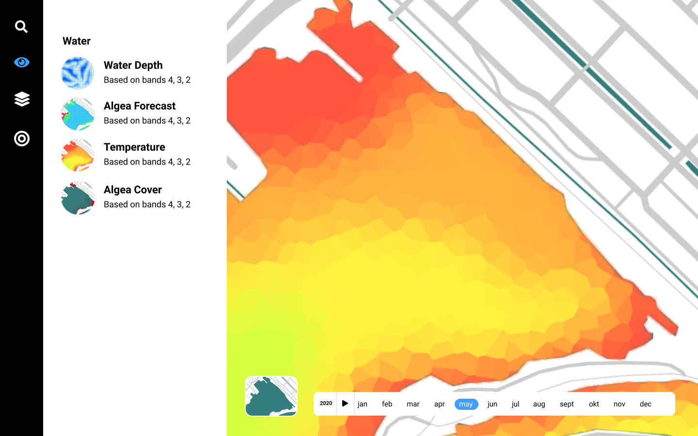

Design
With that I’ve discovered the most important factors the application should have is to be able to detect change over time, biodiversity, wind-direction, water temperature, water turbidity and water depth.
By viewing the same image in different spectrums, we can give the waterboards unique insights. Using timelapses, they can have insight in growth rates. Also adding wind direction data, they could predict where algae will go.
When combining water depth and temperature, they can predict the likelihood of algae of duckweed growing. With that they can also see which areas might need to be dredged.
